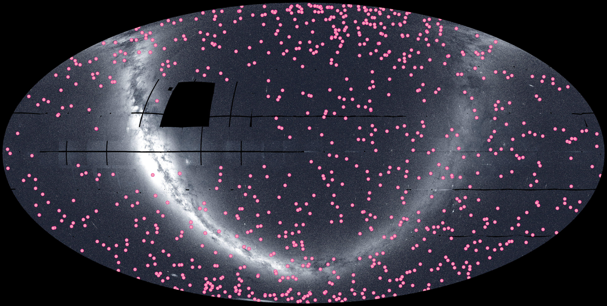
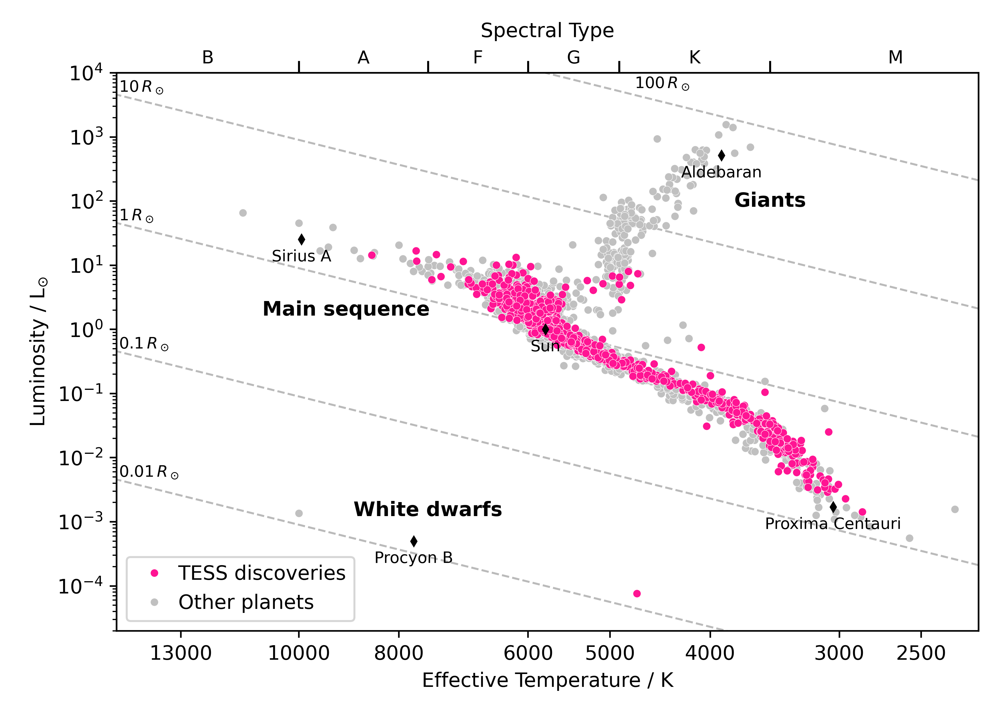
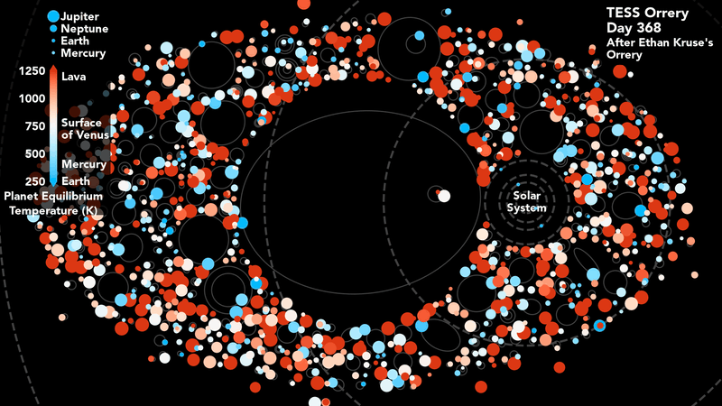
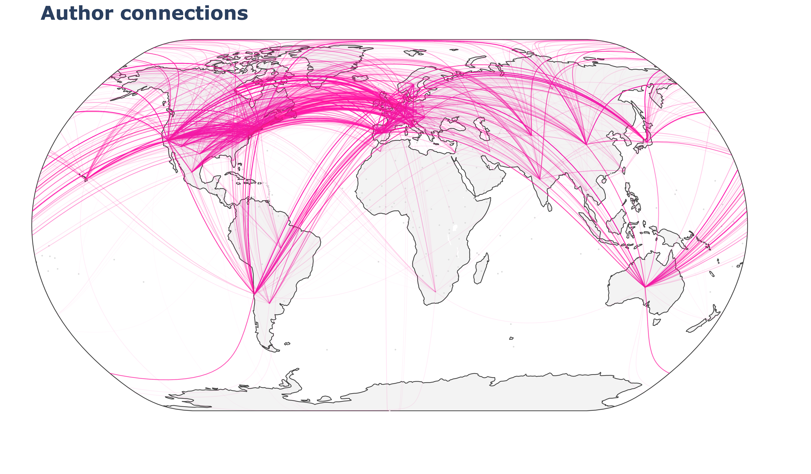

We have some exciting news to share — more than 1,000 exoplanets discovered by TESS have now been confirmed! This incredible achievement reflects the collaborative effort of scientists and astronomy enthusiasts from around the world. We at the TESS Science Support Center at NASA Goddard would like to thank the entire TESS community for helping the mission reach this milestone.

TESS Exoplanets
As of 8 October 2026, there are 1,008 confirmed exoplanets discovered by TESS on the NASA Exoplanet Archive. These planets span a wide range of physical properties, with orbital periods between 0.22 to 2,890 days and radii in the range 0.6 to 25 REarth. Many of them are amenable to detailed characterization studies, including radial velocity follow-up to measure their masses and transmission spectroscopy to probe their atmospheres. In this way, TESS is helping to revolutionize our understanding of the exoplanet population.
Let’s take a look at the confirmed planets discovered by TESS so far. Thanks to the mission’s all-sky observing strategy, the planets are scattered across the entire sky, as shown in Figure 1. The confirmation rate of exoplanets discovered by TESS is accelerating, with 3 confirmed exoplanets at the end of 2018, 292 at the end of 2022 and 1,008 as of 8 October 2026 (see Figure 2). Over time, the properties of the confirmed exoplanets are also shifting. As demonstrated in Figure 3, there is a general trend towards smaller planets and longer orbital periods. This is because it is possible to detect lower signal-to-noise candidates and transits of longer period planets as more data becomes available. The longest period planet (TOI-201 c, P ~ 2,890 days) was first predicted by Transit Timing Variations (TTVs) and then observed to transit in TESS Sector 64. The smallest planet (GJ 238 b, R ~ 0.6 REarth) was discovered using 25 sectors of 2-minute cadence TESS data.

Now let’s examine the population of confirmed TESS discoveries in the broader context of confirmed exoplanets. As of 8 October 2026, the NASA Exoplanet Archive reports 6,445 confirmed exoplanets (1,008 discovered by TESS, plus 5,437 others). Figure 4 shows the period-radius diagram comparing these two populations. The TESS population tends towards shorter orbital periods than the exoplanet population as a whole, but TESS is pushing towards longer orbital periods as it continues collecting more data. A key goal of the TESS mission was to discover small exoplanets suitable for radial velocity follow-up to measure their masses. Of the 1,008 confirmed TESS discoveries, 541 have a mass and radius measured to better than three sigma. This population is shown in Figure 5, in comparison to all other planets with equally well-constrained masses and radii. TESS has discovered 60% (241/400) of all planets smaller than 4 REarth with a well-constrained mass and radius.
The 1,008 confirmed TESS exoplanets orbit 853 unique host stars and exist in systems with between 1 and 6 confirmed planets. Figure 6 presents a Hertzsprung–Russell diagram of TESS host stars. It includes mostly main sequence FGKM stars, plus a few evolved sub-giants and a white dwarf. In fact, TESS discovered the very first intact planet orbiting a white dwarf star (WD 1856 b). To showcase the variety of exoplanetary systems discovered by TESS so far, we created a TESS orrery. Figure 7 presents a snippet of the full video which is available here.
With 1,008 confirmed exoplanets and thousands of candidates still awaiting confirmation, the work is far from over. As TESS continues its third extended mission, it’s discovering new candidates and expanding its reach into new regions of parameter space. We are excited to see what TESS discovers next!

TESS Community

The amazing achievement of 1,008 confirmed TESS exoplanets was only possible thanks to an incredible community of mission partners, researchers, and citizen scientists! Each confirmed exoplanet represents a large investment of time and effort, from initial discovery, through vetting and validation, to publication. Figure 8 shows the vast global network of TESS exoplanet scientists that contributed to this process.
We gathered a few words from people at the TESS Project Office, Science Processing Operations Center (SPOC), TESS Science Office (TSO), TESS Follow-up Observing Program (TFOP), and the Exoplanet Follow-up Observing Program (ExoFOP) to explain what this milestone means to them.
“Each new discovery brings us closer to understanding the diversity of planetary systems and the forces that shape them. Huge congratulations to TESS’s worldwide community and the entire mission team for getting us to this exciting milestone.”
Allison Youngblood, TESS Project Scientist, NASA Goddard
"Twenty years ago when we started thinking about possible goals for a mission like TESS, we agreed that determining masses and radii for 50 extrasolar planets smaller than four times the size of Earth would be a major accomplishment. NASA's recent announcement that 1000 candidates identified by TESS have now been confirmed to be planets by follow-up observations is mind boggling."
Dave Latham, Director of Science for NASA's TESS Mission
"Crossing the threshold of 1,000 planets discovered by TESS is an achievement over twenty years in the making. At the Science Processing Operations Center at NASA Ames Research Center, we are honored to participate in this golden era of exoplanets by helping to turn pixels into planets. We leverage NASA's most powerful supercomputer to generate millions of high-precision light curves and have detected the signatures of many exciting TESS planets, including TOI-700's planetary system with two Earth-size planets in the habitable zone. Every one of these 1,000 worlds began as a tiny signal hidden in starlight, revealed by the painstaking work of many people. Perhaps most exciting of all is how many more worlds are still waiting to be revealed—with over 8,000 candidate planets and ongoing observations, there's room for many more discoveries.”
Jon Jenkins, SPOC Science Lead and Manager, NASA Ames Research Center
"1000 confirmed exoplanets is an incredible milestone for TESS that is the result of years of effort from a large collaboration of people across the world. The vetting team is only the beginning of the planet finding process, but there is a wonder in imagining the possibilities of what each potential new exoplanetary system could bring. You know in that moment when you look at the TESS data and see a new potential planet or discover a new piece of information to improve our understanding about an existing system, that this will impact and reach many others in the exoplanet field down the road and for years to come. TESS does not operate in isolation, but builds on the legacy of other missions like Kepler and K2 and continually grows to include new information available from other missions like Gaia, transforming our understanding of stars and by extension the planets orbiting them. We have seen the exoplanet field change our perceptions about the worlds outside our own solar system since the start of TESS and we are excited to see how it will continue to evolve in years to come."
Katharine Hesse, TESS Object of Interest (TOI) and Vetting Lead, Massachusetts Institute of Technology
"TESS is far more than a planet-hunting telescope—it is the centerpiece of a remarkable global scientific collaboration. Reaching the milestone of 1,000 confirmed planets reflects the extraordinary contributions of citizen, student, and professional astronomers around the world. Through the TESS Follow-up Observing Program (TFOP), this community has dedicated tens of thousands of hours to follow-up observations—using photometry, spectroscopy, high-resolution imaging, and precise radial-velocity measurements to turn distant signals into confirmed worlds. This milestone is a testament to what humanity can accomplish when a global community unites behind a shared mission to explore the universe."
Karen Collins, TFOP Co-lead, Smithsonian Astrophysical Observatory
“The milestone of 1,000 confirmed planets is quite amazing. Each one of those planets took the collective effort of a worldwide community, all of whom agreed to work together through the TFOP and share their data and results through ExoFOP. ExoFOP helped TESS and the TFOP turn a collection of independent efforts into a coordinated community, giving observers around the world one shared place to post, find, and build on each other's data. NASA's investment in ExoFOP has helped the exoplanet community move from small, competing teams with closely held target lists to an open model of collaboration and sharing, and exoplanetary astrophysics has grown faster as a result.”
David Ciardi, Executive Director (Acting) of NASA Exoplanet Science Institute and Lead for TFOP High resolution Imaging Sub-group